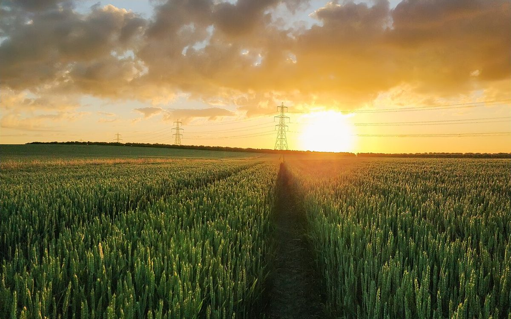

#8 店のこと
店のこと
確認できているのは、所在地とInstagramのアカウントだけです。
確認できていること
- 店名は「オレンジペコ」、業種はベーカリー
- 所在地は北海道千歳市自由ケ丘1丁目13-8
- 電話番号はなし。連絡はInstagramから
- 営業時間・定休日・メニュー・価格・ご予約・駐車場は準備中

想像してみる(制作側の創作)
ここから先は、制作側が想像して書いたことです。お店の実際の様子・考え・商品とは関係がありません。

「オレンジペコ」という名前を見て、制作側が最初に思ったのは、紅茶の葉の等級の名前に似ているということでした。実際の由来は分かりません。
等級の違いは、ふるいの目の大きさで分けられると聞きます。そんな連想から、このサイトでは目の番号を札にして並べました。#4はおおまかな案内、#20は住所と地図。それだけの、制作側の遊びです。